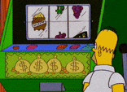

Hi there! I'm Raymond,
a graduate student researcher
living in Toronto Vancouver . My goal is to
collaborate with nice people and use statistical models to
improve our understanding of human behavior .
Before I came to University of British Columbia, I completed my BSc (Hons) in Psychology at University of Toronto. Outside of work, I enjoy playing video games, trying tasty foods, and walking with friends.
My research focuses on decisions to engage in costly behaviors. A condition that plagues humans is that we make poor choices. Why are impulses difficult to control? How can we attain our goals? How does digital technology help (or harm) the ability to make good choices?